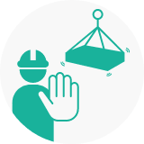
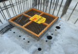
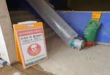
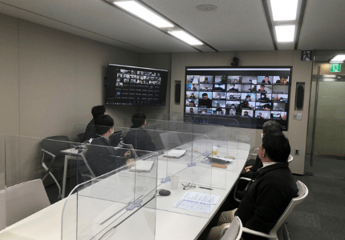
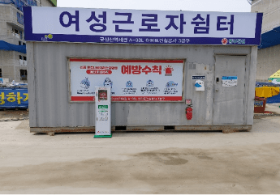
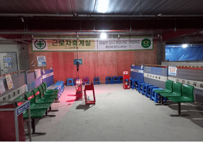
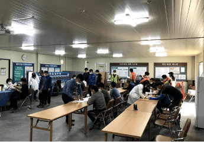
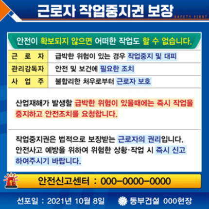

SUSTAINABILITY
Social
Management Coexistence
Management Sharing
Management Quality
Management Human Rights
Management Happiness of
Members

-
Safety and
Health
Management -
In managing the company, Dongbu Corporation will prioritize safety and the lives of clients and employees. In order to faithfully practice duties to ensure safety and health in business sites or workplaces that the company is actually supervising, operating, and managing, and to grow into a sustainable company without accidents to humans and properties, Dongbu Corporation shall practice the following items:
- Complying with legal requirements in safety and health
- Continuous improvement of safety and health management system
- Elimination of hazards and reduction in risks
- Arranging safe and pleasant work environments
- Guarantee of employees’ participation and consultation
-
Objectives of
Safety and
Health
Management -
- Serious industrial accidents ZERO
- Fall accidents ZERO
- Prevention activities for industrial accidents “100 points”
- Safety management level assessment “95 points”
2023.03.22
CEO of Dongbu Corporation
Direction of Safety and Health Management Progress
In order to spread and establish the safety culture of our company and to prevent accidents,
Dongbu Corporation aims to make all safety and health stakeholders*
participate in and achieve the objectives of the safety and health management under mutual cooperation.
- the client, government, local resident, Board, consultative group, labor union, stockholder, worker, etc
- Serious industrial accidents ZERO
- Fall accidents ZERO
- Prevention activities for industrial accidents “100 points”
- Safety management level assessment “95 points”
Settlement of Dongbu Safety and Health Golden Rules
Preemptive measures to prevent industrial accidents, active participation in safety and health activities, and performance of actual safety and healthy works- 01
- Participation in Safety and Health Activities (Cultural Diffusion)
- Settlement of Dongbu S&H Colden Rules 7
- Expanding employees’ participation in risk assessments
- Arranging safe working conditions
- 02
- Safety and Health Capabilities of Employees (Improvement)
- Performing member-specific education
- Strengthening safety and health supports to partners
- Strengthening supports by safety and health levels of sites
- 03
- Safety and Health Management System (Advancement)
- Operating IT-based safety and health management system
- Assessment of safety and health acts performance / Substantialization of supports
- Arranging detailed operation rules of safety and health management system
Safety and Health Management System
- Plan
-
- Guidelines and objectives of safety and health
- Risk assessment
- Review of acts and other requirements
- Safety and health process plan
- Action
-
- Corrective measures of cases and nonconformities
- Continuous improvement
- Support
-
- Resource (workforces, budgets, facilities, and equipment)
- Capabilities and suitability
- Workers’ awareness
- Communication and information share
- Documentation and management of document and records
- Check
-
- Monitoring, measuring, analyses, and performance assessments
- Internal inspection
- CEO review
- Do
-
- Safety and health measures for workplaces
- Operation and management of technology safety
- Partner supports and assessments
- Safety culture campaign
- Preventions and responses to emergencies
Certification Status of Safety and Health System
In order to systematically manage members’ safety and health by predicting and preventing risks related to safety and health that can occur in the performance of business,
Dongbu Corporation obtained certification of KOSHA 18001 in 2012 and ISO 45001 in 2021, converted KOSHA-MS certification in 2021, and has maintained it so far.
KS Q ISO 45001 : 2018
- Organization of certification
-
- TUV NORD KOREA Ltd
- Date of certification issue
-
- 2021.05.18
- Expiry date of certification
-
- 2024.05.17
- Range of certification
-
-
Civil engineering, constructions of buildings, houses,
plants (including chemical, power, environmental, industrial
plants), firefighting facilities, electrical works, design and
development of telecommunication constructions, project
management, purchases, constructions, operations, and services
-
Civil engineering, constructions of buildings, houses,
KOSHA-MS
- Organization of certification
-
- KOSHA (Korea Occupational Safety and Health Agency)
- Expiry date of certification
-
- 2024.08.06
Development Stages of Safety and Health Management System
-
Activities of Safety
and Health
management -
-
Safety culture campaign
In order to prevent serious industrial accidents and arrange safe construction sites, Dongbu Corporation is analyzing the causes of serious disasters over 30 years of company business, reflecting points emphasized by the CEO points, setting and operating Dongbu Corporation’s S&H Golden Rules 7, all of which can promote Dongbu Corporation’s safety culture.S&H Golden Rules 7
Safety campaign to achieve serious industrial accidents “ZERO”Safety Golden Rules 5-
 Wear safety
Wear safety
harness in high
workplaces over
2M and connect
safety rings -
 Do not arbitrarily
Do not arbitrarily
unlock safety facilities
in areas where
there is risk of falling -
 Install and fix entry
Install and fix entry
cover of enough strength -

Arrange flaggers in
equipment/lifting works
and control access -
 Use fire protection
Use fire protection
cover when using
fire devices
Health Golden Rules 2-
Keep convenience facilities
(restrooms, shower rooms,
and lounges)
clean -
 Do not enter
Do not enter
closed/restricted areas
without permission
-
-
Safety Golden Rule’s 5 Management Elements
-

High place workers
management -

Safety facilities
management -

Entry management
-
Flagger arrangement
management -

Fire device works
management
-
-
Health Golden Rule’s 2 Management Elements
-

Management of
workers’ facilities -

Closed space access
control
-
-
Safety and Health Events
In order to enhance safety awareness of employees, Dongbu Corporation is performing safety and health events as follows.
- Events on Safety Inspection Day
- Safety observances
- Safety campaigns
-
 Events on Safety Inspection Day
Events on Safety Inspection Day
-
 Safety observances
Safety observances
-
 Events on Safety Inspection Day
Events on Safety Inspection Day
-
 Safety campaigns
Safety campaigns
-
Inspection of safety and health
In order to prevent serious industrial accidents, Dongbu Corporation is performing safety and health inspections as follows.
- Collaborative inspection of safety and health (participation of CEO)
- Support inspections
- Assessment inspections
- Impromptu inspections
- Special inspections
- Equipment inspections (pre-inspection prior to bringing in high-risk equipment*) * High-risk equipment: Tower crane, pile and pile extractor, construction lift, and mobile crane (≥ 200 ton)
-
 Collaborative inspection of safety and health
Collaborative inspection of safety and health
-
 Equipment inspections
Equipment inspections
-
 Collaborative inspection of safety and health
Collaborative inspection of safety and health
-
 Equipment inspections
Equipment inspections
Performance of Inspection on Safety and Health
Subject sites Supervisor of inspection 2021 2022 Remark All sites Headquarters Collaborative inspection of
safety and health
(Safety Inspection Day)158 214 1 time a month Inspection of safety and health 196 122 Audit assessment Consulting firm Inspection of safety and health 343 225 Preventive inspection of serious industrial accidents Result analysis of safety and health inspection supervised by headquarters (Audit assessment)
Assessment year Performance of assessment Development of requests for improvement and number of measures Subject sites Number of assessments Total Site category Administration category 2022 70 122 3,622 cases 1,735 cases 1,887 cases -
Education on Safety and Health
In order to ensure safety and health capabilities (safety and health management system, technology safety, etc.) of all employees and partners and to enhance safety and health awareness, Dongbu Corporation is performing education on safety and health as follows.
- Site manager education
- Supervisor education
- Safety/health manager education
- Visiting education at sites of partners
- Safety education of employees of partners
- Basic education of safety and health education system
- Special education of safety and health education system
-  Site manager and supervisor education
-
 Safety/health manager education
Safety/health manager education
-
 Education of safety and health education system
Education of safety and health education system
-
 Education at sites of partners
Education at sites of partners
-
Worker health care
Dongbu Construction operates rest areas for workers, operates health management programs (inviting external instructors), and conducts health checkups to promote workers' health and prevent diseases. We strive to secure the health of workers through utilization.
-
 Workers' rest room
Workers' rest room
-  Shelter for female workers
-
 Health management program (external lecturer invited)
Health management program (external lecturer invited)
-  Workers' rest room
-  Health screenings
-
 Health management program (external lecturer invited)
Health management program (external lecturer invited)
-
-
Emotional Safety Activities
Dongbu Construction is practicing safety and health activities that impress workers to create an atmosphere where all workers can voluntarily participate in safety and health activities.
-
 Summer coffee truck operation
Summer coffee truck operation
-
 Summer ice cream payment
Summer ice cream payment
-
 Supply of winter goods
Supply of winter goods
-
 Summer ice cream payment
Summer ice cream payment
-
 Summer watermelon payment
Summer watermelon payment
-
Summer ice cream payment
-
Supply of winter goods
-
 Warm drinks provided during the winter season
Warm drinks provided during the winter season
-
-
Guarantee of workers’ right to stop work
Dongbu Construction protects workers from danger by granting workers the right to suspend work in the event of an imminent risk of industrial accident. We operate an on-site safety reporting center to make workers aware that they are protected from unreasonable measures when reporting harmful/hazardous factors and risks.
-  Guide to guaranteeing workers' right to stop working
-
 A ceremony to declare workers' right to stop working
A ceremony to declare workers' right to stop working
-
- Industrial Accident Occurrence Index
-
Accident and Death rate per 10,000 workers
※ Performance in 2022 will be presented by KOSHA in July.